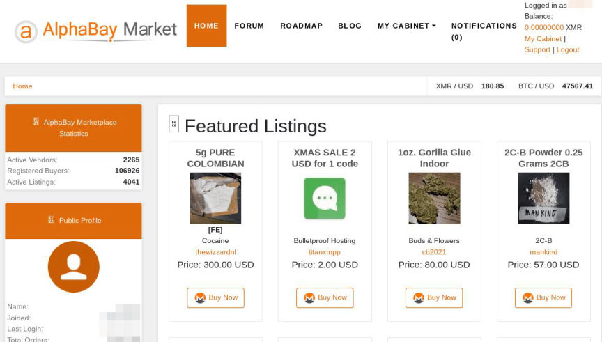
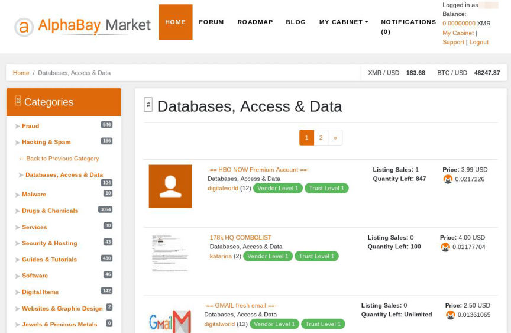

AlphaBay Market
Exit Scammed in February 2023
Mirrors
- alphabay522szl32u4ci5e3iokdsyth56ei7rwngr2wm7i5jo54j2eid.onion
- tnaefzkcnhryeusi7hdpqujqiqmnbtah3dmjcg3gvezohunjuxbq.b32.i2p
PGP Keys
AlphaBay Market Public PGP
-----BEGIN PGP PUBLIC KEY BLOCK----- mQINBGDX5esBEADBO8VYNZ/jCsPvJ2UxXeGSb3UOjeJ2vv7AHoLnvQfiGG4MDjAU G1EdzrO7e0zENTdIdiq6MWkjrvMgS5JiLpAwlEP5RyX6fnUiHhCcO7KyWZRMUyPA R9dGk0I0kfQigKNUnv5d12V/FyG/JRThlaherKk0FFdN7zfZwDd0wsUmHqE4tcx9 E3LRJvzLgd3++72nAQKASKeqRwIy8pyB7BUgmBLuy2sB5nlFKTZfQvSsmLRlT2Ab WL0/JEGiG3OTbeXqKjQey/wT0Wp0KsW1bsbCvIA5vFFXvmvZC2shH0SFSGkHPQm8 gz5IoTDqRqa4QOKVivQwEJj/7ZfAwY5TGL3T9O8QZmrjoRmd0oEc1RAOuBTil2Cm C67RoC+QmjQ2pRaheC6gZTIP2w5m62phRLQUo8vUVmBq4odQPhOmtY2NzzSYv+u3 qGO0B1kkSem84K1g6gsHWgL0ukRmw4n6tejUn7sO4Ao1BaAURc7kWVFH9lPFjEm+ X7zDmkZG0Sn6oYCZ3as6c9HCYCPcUH+smU3SYatYraqBMNRVj43UDRz2p2gFmamt gXjrKLGM8snkWo8EqODBZNy3lNlVEs19ItFbvzkSbcoclNpJQ4eIpwOQBdYpP+k+ FW1LzuIsuOB2zglPezNmRnChVhTlPlbCxInZjvSLq9Qq+BHLRia9mozr5QARAQAB tBhBbHBoYUJheSBOZXR3b3JrIDxub0Bubz6JAjwEEwEKACYFAmDX5esCGwMFCQxM XeUFCwkIBwMFFQoJCAsEFgIBAAIeAQIXgAAKCRARxIDCUVkbEKI7D/9rzVBWt6rA r4HX2DomIbLtWmeasAeuSYLliGU1AWxcqVk0YAYnYisO6PboQT0U1ZwiGbiTNObk lZCR8Lf+5QAMdeD91KLJciXx5SDIqw32JVLK9EI6rTrmikiITA71DGB4akJUp/yI k2Fvq489ahmEkv3RBPvIUsq34oG6YJlpfw/qQ65DhMw2zf56d9VqsXPbhUPBP7Q2 y9s19KHImbzSjIAEUkY/P5bEWqjp3H4JgKHiNTkyKxr03+7Zb1qLCWy5ZcPB50rC vLc1RU1Gld5jg7K9+VGzsYD2eb/apl/zqRpMUeHKzWw+jdTsmONLroqWln2s+owm DBiWmoH18wjg4xjDQtG5R+NwzavePUOSoe/oK3mqS6enmw88pe6RrZMw14Aywj8e goi135LtzPTZ0RV24oKU+QN7rjd/dYyH+FA+aBgUuANGvmFBC1gYgF4pT1xhZyxa q3ixWi6fkcNFNN8s0Nf5UZ9/8f+vrf3TUNLRnc4ifgRdh2k//8jYUKsZuSnmn0vm o8GZ5j0AxI/GZv6B/7lDl6qEDL47m7yZiWNnkhL50oUqe36W8h8X5RRYsqdhcX5i kiaOUXx7J8ELjqThks/Jr3Tg3woFSP8EL5o7sG61GwGYIlPR6lPB5uNwctVKtFvt WO+zZ+uYnkjk+7xLKKPI5jh5fd7BdPeoZ7kCDQRg1+XrARAAxeNaJ2bavQ+fnpgy IPuMd3uUWeTMhdaK0wTV0ElxQyLz58T9axlweiJxx6Yk9AY7iQDokjSOflMZZ1ui GRN9C36SqE58XYHPuTk6LtaX6RAd9hLbLZJeZPiPYjNXe2P1KF4I2kBwiXHaMNX4 SgLAWl+wO9QYcuSLdzDtKBiNJk9TxtP2Dyy5y9HsI/3ABuy5r27dzib6Ucy2RfXZ BldFvGUrbyRrUuhfq66wLeQlt2Y6LwUUq80APu4+Kw3PbLJMOZg8lyjHOkxHbBBj nIiS4+BHspB24yx+oduxD6zTXxTm3roHhKZABwnOcbNns8vMbQa+M/uKLP9MJNPV gozcn/besqpee8Xdgm9UZcHlX0x3SFwO0oijq2XRLsmiMV2gilXV0+Abl1vZqGPc Sv2y62h2cBR4kt4YNXw89tuwhpIcUA2S2csfZtedKs76KzBJQi1a1/2esW6H6wwb sDRDMISsJDpfwYkxEkdFLdR3Zf0z4hpgshxYZ81ZWwzTya4OPpSp2cdHA0TZgAMJ /mYRWtqWpGFAalJ3bWJHh2whK+JWXoxV9X2Ss0e8h88jV+0dts/zs9xpCGQopiXN F2tXtsXXX/+bpWdfKdO3OKVXLyAmeXb8AlNlvfsjiWuK9q5JDWJyHsSU27YiaEMz FN4HmZQXYsEuJ0CmQRZmeE/k+KUAEQEAAYkCJQQYAQoADwUCYNfl6wIbDAUJDExd 5QAKCRARxIDCUVkbEGKHD/99E14zZ3oQe5RDJRbFltsBvI6UEuscop4oCpIe6Kqq 75LHu9QPdO33IhU2qcMIJCb4uBth2T2P/CEK7T3leq7KV9SJ0VA5AxISzeeeTbKG 1Sd4wZlKDYY1AKyeH9aWsJnVHTjLTopbMriZOizNpZDesx1Im93FJGzo65ke1ZiN zxoscouQcA4UQe/rEyUZfDfu0rY3HxIZgWWq4L6um8HbqZwydpzeuwwJnCqaG1Me M7+eKy3xWfn677oVcqSmEWul8LXevLASZDUgtdC6eh7dXgBWmvyeQJxq1ttXCCkE 41gk0HN3Gynz8d6YksM0aanGgvm2QdXdo/kHktaX2u4FMrxBnJxvRC6JVkG8TRc3 yX0SYZjSlSQtAXP1pUKk7UqFtSeam4ffv5+TEkHW1t3JVlilEGF2usSRzR5fmpt3 jjXpxDyteFDqrxAxyDKNViGXPRUxv3scp/Kk9hwPl/TT4cTLFUjVS9iJu+Xi7jVW vhPpswRZxHG0Zuk496Z/+H2PAz/LEeoq9mTqgGXRkJ73QPuzCycArlHnMU62Vsum pKzbTRMVGENnbv4oi8LMzT78FSbBMf4YjhdkPBf3xLwvotsPZN6usDRq2DazS7qx 0saXxg7xZc8odkSbFlCBorPGDrx6mH0o3Wk7iBvMmLplg+D/i7J6nU3YhMD7o1XR qA =I/N4 -----END PGP PUBLIC KEY BLOCK-----
An individual listing on AlphaBay Market

The AlphaBay Market homepage

A category for fraud-related items on AlphaBay
Per Recon:
AlphaBay Market is a marketplace founded by alpha02, reputable member on most carding forums and experienced carders. After some time helping others on carding forums, he decided to start his own marketplace and allow sellers from around the world to sell goods to buyers worldwide. DeSnake joined as a co-founder and security administrator shortly after.
AlphaBay was shut down after a law enforcement action as a part of Operation Bayonet against it (and also the Hansa market) in the United States, Canada, and Thailand, reported 13 July 2017. The alleged founder, Alexandre Cazes, a Canadian citizen born on 19 October 1991, was found dead in his cell in Thailand several days after his arrest; suicide is suspected.
As of August 7th 2021, AlphaBay has reopened doors. One of the original administrators DeSnake has returned and relaunched the marketplace. DeSnake had his PGP key verified which confirmed his authenticity as well as he was confirmed by ex-AlphaBay staff members and Dread administration.
AlphaBay now uses Monero only, promotes I2P as a main connection point (has Tor mirrors too) and is working on a decentralized marketplace project. Upon relaunching new features such as automatic dispute resolver and AlphaGuard wallet protection were introduced continuing the legacy of innovation that the marketplace has been known for.
How to purchase on AlphaBay Market
Fund your wallet with Monero (XMR). There are many guides on the Internet how to buy this anonymous and untraceable cryptocurrency, we suggest you familiarize yourself with that before you continue.
Go to the homepage and select a category or type in the search function what you are looking for.
Review the listing. Make sure the listing type is correctly labelled by the vendor (digital/physical). Review the listing refund policy. Check the vendor reputation on the marketplace and on the Forums.
If the listing says Finalize Early (FE) instead of Escrow, be extra careful. We do not give out FE permissions easily but that does not mean a vendor can decide to scam you. Make sure you 100% trust the vendor before continuing.
Select quantity and click & #38; #38; #38; #38; #8216; Purchase& #38; #38; #38; #38; #8217; . You will be met with instructions/information/safety guideliness about the escrow and purchase process, READ CAREFULLY.
Once you have selected your options and reviewed the order you wish to make, confirm your order and wait for the vendor to process it (unless it is autodispatch).
Once you have received the order and you are 100% satisfied, release the escrow as soon as possible. If all of your orders auto-finalize you will receive a penalty on your Trust Level and the vendor will probably rate your & #38; #38; #38; #38; #8216; Release Time& #38; #38; #38; #38; #8217; low which other vendors will see and might refuse to accept an order from you in the future.
How to connect via I2P?
We HIGHLY RECOMMEND using I2P over Tor for many reasons which you can see in Frequently Asked Questions (FAQ) section. Currently Tails DOES NOT work with I2P and requires too much configuration for the average user to do on each boot. We are working on Tails having I2P/custom script for Tails.
Whonix / Debian-based flavours (Tor -& #38; #38; #38; #38; #62; I2P or Clearnet IP -& #38; #38; #38; #38; #62; I2P)
Run the following code:
sudo apt-get install apt-transport-https -y;wget -q -O - https://repo.i2pd.xyz/.help/add\_repo | sudo bash -s -;sudo apt-get update;sudo apt-get install i2pd -y;sudo service i2pd start
The above command installs secure package installation with HTTPS, gets signing keys and imports them, updates packages to recognize your knewly added repository, install i2pd and then start the i2pd service.
2. In Tor Browser or your Firefox, type about:config into the URL bar, accept the warnings and press Enter. Make the following changes:
extensions.torbutton.use\_nontor\_proxy true
After setting extensions.torbutton.use\_nontor\_proxy to true your browser might restart to apply changes. Apply the following changes where the first is the setting you have to search and after the space is the value you want to have:
network.proxy.http 127.0.0.1
network.proxy.http\_port 4444
IMPORTANT: Wait 2-5 minutes depending on your network in order for I2P to connect properly otherwise if you try instantly it might say that the host is unreachable.
You are now able to browse i2p websites. On Tor Browser/Firefox it is important to add http:// infront of the i2p site (example to see AlphaBay you go to http://tnaefzkcnhryeusi7hdpqujqiqmnbtah3dmjcg3gvezohunjuxbq.b32.i2p ) otherwise you will search it instead with duckduckgo or other search engine which you have set.
When you browse any I2P eepsite (equivalent of Tor onion hidden site) it might say in your browser on top http(insecure) or when you click to input a field it might say & #38; #38; #38; #38; #8220; The connection is not secure& #38; #38; #38; #38; #8221; . You can safely ignore that, I2P is end-to-end encrypted when you brwose .i2p sites same as when you browse .onion
For other Linux flavours find the most recent I2Pd documentation. i2pd is an established alternative i2p software which is the same as the original software however it is written in C/C++ and provides faster connection, less resource-hungry on the CPU/RAM etc. After installing i2pd either from source or from repository, you can proceed to the step where you modify Firefox/Tor Browser.
IMPORTANT: Do NOT browse any other websites apart from AlphaBay i2p website. If you want to go back to normal web browsing through Tor please go through each change individually in the browser and revert it, then disable the i2pd service with sudo service i2pd stop (or restart if you want to browse other i2p websites). TBB is not configured for cross-I2P-Tor-Clearnet browsing so make sure to restart/revert changes and restart browser each time you want to visit different website. It might be a pain but it is for your own security.
Reviews (68)(Average Rating 3.3 / 5.0)
maximus2021-12-10
Moderators are fair and the automatic dispute thing is really neat to use, I'm only giving it 4 stars because no support for bitcoin and no other fiat currencies only dollar
newbutsame2021-12-15
totally agree with maximus their support is outstanding helped me with a double deposit issue that was my own fault mind you i had used alphabay in the past.. I recently had problem with vendor won't name and mods were super quick on the dispute resolution vendor didn't respond and i got everything back! i spent it on another vendor though afterwards who came through lol
johnny2021-12-16
A+ support helped me setup my vendor store quick thumbs up legends++
westside2021-12-18
torrez refugee here alpha seems good but still waiting on more fiat currencies and bitcoin support!! made my first order see what happens
Anonymous2022-01-04
My theory: Alpha02 and DeSnake were originally both the same person (Alexandre Cazes). When the feds got him, they got DeSnake's PGP because Alex's laptop was completely unencrypted. The feds made a shitty clone of AlphaBay pretending to be DeSnake, and propping up I2P because they found some zero-day in I2P that they're exploiting.
anonymous22022-01-05
Anonymous u're wrong bro he's legit he had loged in on privat forums administrotors check him u can see for urself Ur story is bad new look is much, much better and organised i don't know about i2p i haven't tried it but i know darkode introduce i2p recent and dread said they are doing i2p too as another comentor on another news on darknetlive.com said they feds too? tor known to be more vulnerable how they find alphabay servers before?? darkmarket?? silkroad?? never explained ! many servers found with tor i2p has no track record prob cuz it's meant to be true darknet not like tor... desnake himself said use i2p if ddos cuz fucking tor developars dont fix the D D O S who to trust?? tor no patch for years or i2p real darknet not funded by us government... i'll try it now actualy
yollie122022-01-17
It seems pretty good so far.. I'm just trying to find the best prices. Can someone point me in the right direction..
4starsfromme2022-01-17
im give 4 starr becose no bitcoin only moner! no problem everythang else perfect easy use
happybuyer2022-01-19
lots of bullshit spread by their competitors but they've got good market no cap my vendor moved there from canna
notbad2022-01-27
decent market support is great good selection of vendors easy to navigate
alphaisback2022-01-29
3 stars becouse many bad guide seller but lots of drug offers physical item vendors come through recomend to use if looking for drugs simplest clean UI don't get lost like on dark0de
perfect2022-02-18
perfect site moderate speed but excellent stability suport very good vendors responsive my new place to order!
Adsoandso2022-02-27
What is the current addresss to alphabay
rock2022-03-05
steady as a rock solid as a motherfucker highly impressed
customer2022-03-08
Ordered from lilxan from alphabay mediocre stuff but i rate alphabay 5 stars mods halped me when i had issue with lilxan taking time to reship lost package
bigg2022-03-11
Big time buyer 6 figure purchases since january zero issues big shoutout bare man eating food ^
asian2022-03-11
simply crap it's really hard to use other markets like ASAP are much better
Rest772022-03-13
Got my shit 2NDD
Mery2022-03-19
After /n/DeSnake leaked Archtyp Market IP address I've closed my account on AlphaBay and will never vend there. the community do not tolerate these kinds of behavior
Anon2022-04-12
What vendor fee for new seller ?
ba11zpuf2022-04-13
deposited funds but they never arrived. looks like scam
mps2022-04-14
solid market - never used the original this is good lots of vendors i know and it's a fast site.
herbertwest2022-04-24
EVERY TIME i register i get "username taken" i changed 5 times then fucked them off.
AZAZEL2022-05-02
Can’t access the market. Says “anti ddos firewall reviewing your request to access market. Don’t refresh you’ll be automatically redirected.”
^^yosemite butthurt^^2022-05-08
lmao
Pluk2022-05-15
I was phished but the weird thing is i was talking to moderator on phishing link is that possible cause it was real moderator cause they recommend i get link here
throwaway2022-05-16
Cannot verify signature on deposit address when placing wallet-less order. Very suspicious
nina2022-05-19
Why is the registration button not working ,I tried registering but it won't work please help me
ezvend2022-05-19
Happy to be vending on a pro market making maad moves
jackmehowf2022-07-07
it worked great twice then 3rd time went to deposit n I mmusta been phished im usingverifyd links n cant even register a new account anyone else have this problem
DaSnake2022-07-12
good site except miss some love loll
Frenchteuf2022-07-14
Scam. They give me fishing wallet adress. Never seen my found.
Frenchteuf2022-07-14
Scam. They give me fishing wallet adress. Never seen my found.
andromeda1002022-07-17
I find the "find all the frogs, birds, cats, etc " capchas on alpha and other markets very difficult. Can never get them right. VICE and ASAP are much easier.
bene2022-07-26
Always down, wait days an days to hope see your money back.
kabuki2022-07-27
registered & transfer to alpha wallet now cant log on to the bloody site at all. got in once it ended up asking me to agree to some update on terms & conditions and enter my pin- dodgy?
kabuki2022-07-27
cont...have transferred nearly $500 and not sure if its even in my freakin wallet!!!
Buttercup12022-07-28
AB is it! Xmr can be pain in ass.But venders are spoton. Cf money odd 500+ listed 20 veiwable. Needs how to recover past 2fa w/ lost pgp? Still #1 DNM
Sheshenamy2022-08-05
Hhhhh
Bitchwagon692022-08-11
Can anyone provide me with a good url for Alphabay and Tor2Door please?
Michelle2022-08-11
I need a good url for Alphabay, can anyone help me please ?
MeLoveBiscuits2022-08-13
AlphaBay is absolutely superior to any other market! To those who say they can't register their account on AB using TOR for Windows, export your bookmarks, remove TOR from your machine (just delete the folder, likely on your desktop), download and install the latest version of TOR, import your shit, that's it. You should be able to register. There's likely other methods, but this is so easy I don't care to waste the time. Hope this helps someone.
IS this for real?2022-08-13
I don't believe the real DeSnake would have anything to do with Dread! To my this all seems fishy as hell, Alphabay always stood alone now it just seems like De is bunter and paris biatch! The feds own this.
Is this legit ??2022-08-17
I saw someone saying that this is not a legit site can anyone
sig2022-08-18
I fucked up and got scammed because I was lazy and didn't verify the link.the easiest way to confirm that it is legit is when you try to log on where you have to solve the clock hands. If the address in the browser doesn't match the address in the clock you are gonna get phished. A good way to tell if the address is a scam is it begins with a bunch of numbers and doesn't match the address in the clock.There is a site called Taxi on the darkweb that has a working address. Of course never believe anybody on here and do your research. type in tor taxi.. The first one is the site. Please verify first. Then don't ever send more than $25 or what u can afford to lose.It will take an hour or so for it to deposit. It's slow.. If oit goes in, Fucking congrats! LOL. I gave the site only 4 stars because it's down a lot and slow.
legit link2022-08-18
I have real alphabay link https://alphabay522szl32u4ci5e3iokdsyth56ei7rwngr2wm7i5jo45j2eid.com/ buy anything your own risk and review
OMG2022-08-18
Finally i find legit vendor today i am very happy because i have 30000usd but only digital services t @Ccshopdarkweb buy and review
sig2022-08-18
https://alphabay522szl32u4ci5e3iokdsyth56ei7rwngr2wm7i5jo45j2eid.com/. Guys this is not real link this is a scam link so don't West your money don't west your time
sig2022-08-22
I'm telling you all to make sure it's a legit site is all you have to do is make sure the address in the clock is the same as in the browser! Yes I can tell that the couple of links above are hacks! Go prove it yourself! It does not match what is inside the fing clock! It has a.com/ at the end! The inside of the clock does not end in this! your welcome!
Qaisar2022-08-22
Works Very Well .. Bought couple of things
2FA VERIFICATION2022-08-24
I activated the 2FA verification. It usually gives me a message to decrypt with GPA and worked until today. Now it doesn't give me any message to decrytp! Just asking me for the 2FA code, which I can not have because it doesn't give me any message to decrytp.... WTF
Pc2022-08-24
Yh same I have no message to decrypt just says enter 2fa code ahhhh ffs only wanted to order some herbal tea ffs
2FA missing2022-08-24
hi, i have the same problem like the guys before, after log in there is no message to decrypt :/
2FA GONE?2022-08-25
Whats going on wheres my 2FA Verification thing something is up with the site today?
Reporting back2022-08-25
Heard this is a security feature as the canary expired. @hould be up soon but has been some hours
AlphaVendor2022-08-27
Waiting 9 days for support to unlock vendor account after backup of password burnt. Moderators veriefied PGP after 2 days, escalated to DeSnake after 3 days, 9 days later DeSname yet to aknowledge or reply to myself on forum, or moderators on market regarding regaining accessd to my account. Purposely being evasive. Probably so can pockit the 20~ XMR in escrow which would now have been released. level 5 vendor, trust level 3. 300+ sales 4.98/5 rating. Thanks AlphaBay, off to ASAP along with all of my customers! Ciao
fem2022-08-28
Have used for 5 packages so far and everything landed. Not sure why so many bad reviews. Buy from trusted people and domestic to be safe.
Cal2022-08-29
Make sure that you get a correct link for the site. It should come up with the clock with the address in the face. You can use 2FA to get in and still get scammed. You can get on the site and everything looks normal . when you get to creating a wallet address you HAVE to make sure that the address is verified. Make sure you use a PGP software with the correct certificates from alphabay and DeSanake to verify the address. If it does not present you with a box to decrypt , then you are probably getting a fake address. I made this mistake, and it gave me just an address. I could not figure how to verify the address, because it did not give me the code to decrypt, that was the clue!!! and i used it and none of my crypto was deposited in my account! 500$ mistake.Second time made sure of the link and made sure the wallet address was verified and deposit went thru. Not sure how they let you log in with 2FA and get to your account, but are able to give you a fake crypto wallet address... I changed my password to be careful
Acheron2022-08-29
'Whoops, looks like something went wrong. Try to reload the page.' ...or is it just me? So, freakin' annoying.
uutuyuu2022-08-30
stay away from this market, u will get banned for the most stupid reasons..
AlphaBayHater2023-02-19
Stole my fucking coins as a vendor. Fuck you DeSnake faggot fuck
CartelUnions2023-02-24
Maybe a big maintenance since all of these DDOS attacks happening. Well i hope. Or maybe just the biggest scam exit ever. And if that's the case DeSnake and his team better hide good we'll come kill everyone.
Darkman2023-03-05
I cant believe alphabay has exit scammed. Desnake was full of shit, and john marsh has disappeared off darknetstats the same day alphabay exits cammed. Either he is desnake or he knows who is
duckyducks2023-05-16
so alphabay is gone forever now? can't anyone fucking host a proper onion site anymore? bunch of retards with encrypted laptops and computers who get caught on regular searches. i dont even run a darknet website and i use full truecrypt encryption on all of my main machines. is it really so hard for those idiots to use encryption? is there any other website like alphabay? i need some stuff that alpha was selling
Moke2023-12-15
How do I get the link to go to the site?
Glo12024-01-05
All these markets do is exit scam, scummy. A lot of vendors just taking their customers and going private. Cloned cards / Fullz / Carding manuals my go to was earrlth protonmail com he was big on empire a few years ago and went private. Tell him glo sent you
cMu$#2%9s2024-02-21
I need to learn the encryption , any one help me ?


ogmarket2021-11-17
I've looked at the market and everything seems good same process to buy as before purchased from chemical_spain and received my order and they asked me to write a review wherever i could i'll be honest with yall i was skeptic about the relaunch but alphabay seems to be the real deal.Only drawback is no other currency than usd but once you get used to it it's a piece of cake